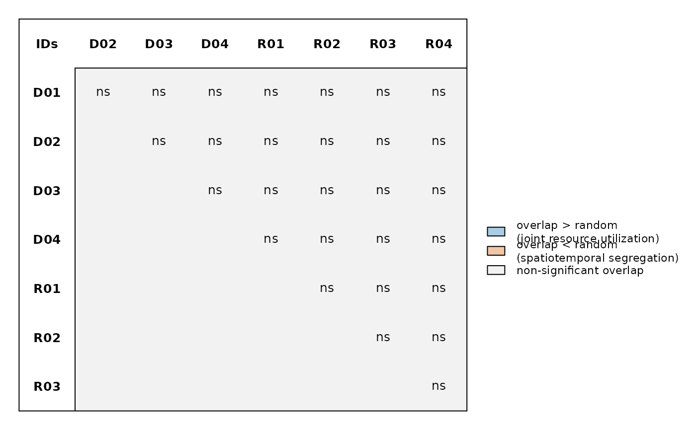
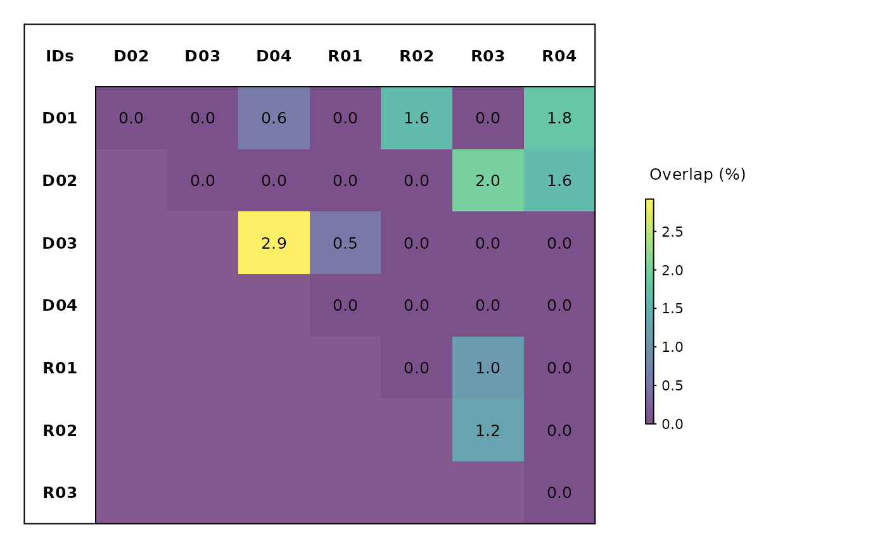

Plot an association significance / overlap matrix
Source:R/plotAssociationMatrix.R
plotAssociationMatrix.RdDraws an id x id matrix of pairwise association results from a
randomizeAssociations null model - coloured either by permutation significance
(positive / negative / non-significant) or by mean overlap percentage. Individuals can be sorted by
a supplied metric (e.g. body size).
Usage
plotAssociationMatrix(
random.results,
type = c("significance", "mean overlap"),
color.pal = NULL,
sort.by = NULL,
sort.by.title = NULL,
full.scale = FALSE,
discard.missing = TRUE,
main = NULL,
cex = 1,
file = NULL,
width = NULL,
height = NULL,
res = 300
)Arguments
- random.results
The null-model output of
randomizeAssociations.- type
One of
"significance"(default; +/-/ns from the FDR-adjusted permutation test) or"mean overlap"(the mean pairwise overlap percentage).- color.pal
Colour palette. For
"significance", a length-3 vector for positive / negative / non-significant; for"mean overlap", a continuous gradient. If NULL, colourblind-safe defaults are used.- sort.by
Optional numeric/integer/factor/POSIXct vector (length = number of IDs) used to reorder rows and columns (e.g. by size). Values are shown in a header row/column: numbers to a common number of decimal places, factors as their labels (ordered by level) and dates formatted (ordered chronologically).
- sort.by.title
Header label for the
sort.bymetric. If omitted, it is inferred from adata$columnexpression.- full.scale
Logical; for
"mean overlap", map the colour ramp over the fixed 0-100% domain instead of the observed range. Defaults to FALSE.- discard.missing
Logical; drop rows/columns with no valid pairwise interactions. Defaults to TRUE.
- main
Optional overall title.
- cex
Global expansion factor for all text (cell labels and legend). Defaults to 1.
- file
Optional output file. If
NULL(the default), the figure is drawn on the current graphics device - the usual interactive behaviour. If a file path is supplied, moby opens a graphics device chosen from the file extension (.pdf,.svg,.png,.jpg/.jpeg,.tif/.tiffor.bmp), draws the figure to it, and closes the device automatically (also if an error occurs). For multi-page or batch workflows, keepfile = NULLand manage the device yourself (e.g.pdf(...); plot...(); dev.off()).- width, height
Output size in inches. Used only when
fileis supplied. IfNULL(default), a size is derived from the figure's structure (e.g. the number of individuals or panels). These defaults are sensible starting points, not guarantees: dense or unusual figures may still need you to setwidth/heightexplicitly. The two can be set independently.- res
Resolution in pixels per inch, for raster formats only (
.png,.jpg,.tif,.bmp); ignored for vector formats (.pdf,.svg). Used only whenfileis supplied. Defaults to 300.
Examples
# \donttest{
# Significance / overlap matrix from a permutation null model
wide <- createWideTable(rays, value.col = "station")
#> Warning: - 'id.col' converted to factor.
#> Warning: 3 (ID, time-bin) combination(s) had multiple differing values; the first was kept. Aggregate upstream (e.g. calculateCOAs) to control this.
#> Tied (ID, time-bin) instances (first value kept):
#> timebin ID ties
#> 1898 2023-06-14 11:00:00 D03 ST01 (1) | ST06 (1)
#> 2163 2023-04-24 05:00:00 D04 ST01 (4) | ST05 (4)
#> 5302 2023-06-25 16:00:00 R04 ST03 (1) | ST05 (1)
assoc <- calculateAssociations(wide)
#> Calculating overlap - complete monitoring duration
#> Total execution time: 0.03 secs
rand <- randomizeAssociations(wide, assoc, iterations = 100, random.seed = 1)
#> Total execution time: 0.19 secs
plotAssociationMatrix(rand)
#>
#> Association matrix
#> ------------------------------------------------------
#> Individuals: 8
#> Metric: simple-ratio
#> Display: significance
#> Significant: 0 positive, 0 negative, 28 ns
#> ------------------------------------------------------

plotAssociationMatrix(rand, type = "mean overlap")
#>
#> Association matrix
#> ------------------------------------------------------
#> Individuals: 8
#> Metric: simple-ratio
#> Display: mean overlap
#> ------------------------------------------------------

# }